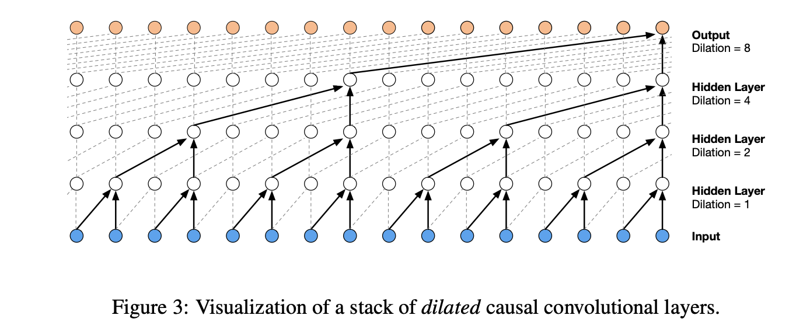
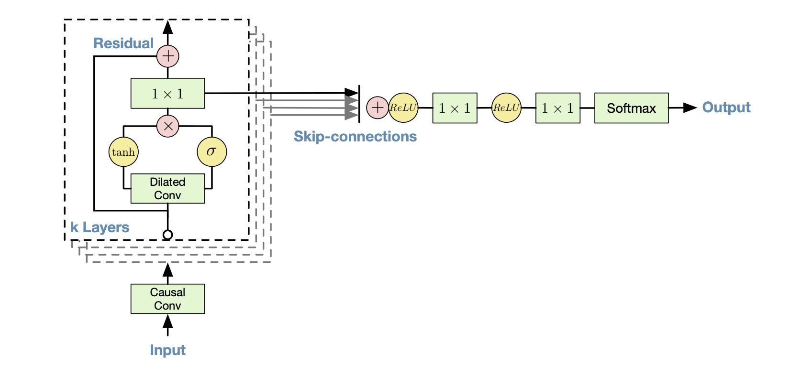

# there no change change in the first several cells from last lectureBuilding makemore Part 5: Building a WaveNet
Neural Networks: Zero to Hero
WIP
Course Page: https://karpathy.ai/zero-to-hero.html


Setup
import torch
import torch.nn.functional as F
import matplotlib.pyplot as plt # for making figures
%matplotlib inline# read in all the words
words = open('names.txt', 'r').read().splitlines()
print(len(words))
print(max(len(w) for w in words))
print(words[:8])32033
15
['emma', 'olivia', 'ava', 'isabella', 'sophia', 'charlotte', 'mia', 'amelia']# build the vocabulary of characters and mappings to/from integers
chars = sorted(list(set(''.join(words))))
stoi = {s:i+1 for i,s in enumerate(chars)}
stoi['.'] = 0
itos = {i:s for s,i in stoi.items()}
vocab_size = len(itos)
print(itos)
print(vocab_size){1: 'a', 2: 'b', 3: 'c', 4: 'd', 5: 'e', 6: 'f', 7: 'g', 8: 'h', 9: 'i', 10: 'j', 11: 'k', 12: 'l', 13: 'm', 14: 'n', 15: 'o', 16: 'p', 17: 'q', 18: 'r', 19: 's', 20: 't', 21: 'u', 22: 'v', 23: 'w', 24: 'x', 25: 'y', 26: 'z', 0: '.'}
27# build the dataset
block_size = 16 # context length: how many characters do we take to predict the next one?
def build_dataset(words):
X, Y = [], []
for w in words:
context = [0] * block_size
for ch in w + '.':
ix = stoi[ch]
X.append(context)
Y.append(ix)
context = context[1:] + [ix] # crop and append
X = torch.tensor(X)
Y = torch.tensor(Y)
print(X.shape, Y.shape)
return X, Y
import random
random.seed(42)
random.shuffle(words)
n1 = int(0.8*len(words))
n2 = int(0.9*len(words))
Xtr, Ytr = build_dataset(words[:n1]) # 80%
Xdev, Ydev = build_dataset(words[n1:n2]) # 10%
Xte, Yte = build_dataset(words[n2:]) # 10%torch.Size([182580, 16]) torch.Size([182580])
torch.Size([22767, 16]) torch.Size([22767])
torch.Size([22799, 16]) torch.Size([22799])class ResBlock(torch.nn.Module):
def __init__(self, in_channels, out_channels, kernel_size, dilation):
self.dilated_conv_filter = torch.nn.Conv1d(in_channels, out_channels, kernel_size, dilation=dilation)
self.dilated_conv_gate = torch.nn.Conv1d(in_channels, out_channels, kernel_size, dilation=dilation)
self.id_conv = torch.nn.Conv1d(in_channels, out_channels, 1)
def forward(self, x):
conv_filter = self.dilated_conv_filter(x)
conv_gate = self.dilated_conv_gate(x)
z = torch.tanh(conv_filter) * torch.sigmoid(conv_gate)
id_conv_out = self.id_conv(z)
res_out = id_conv_out + x
skip_out = id_conv_out.clone()
return res_out, skip_out